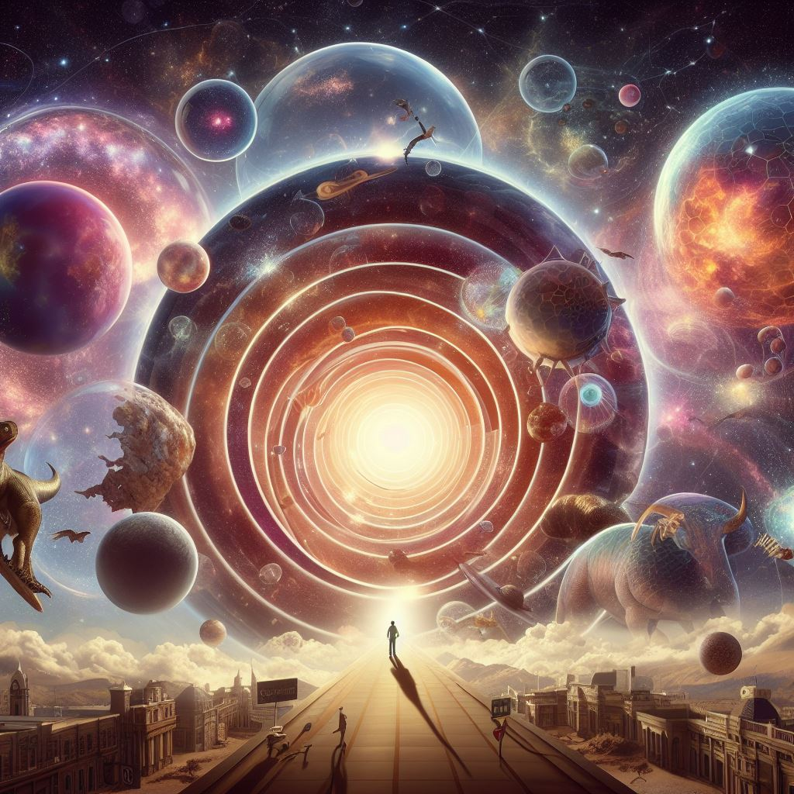
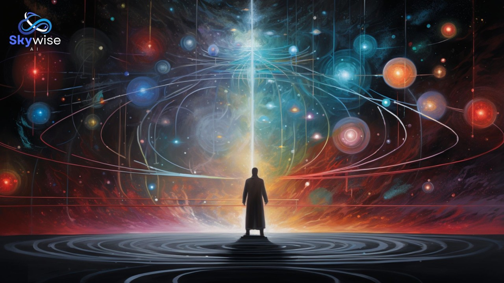
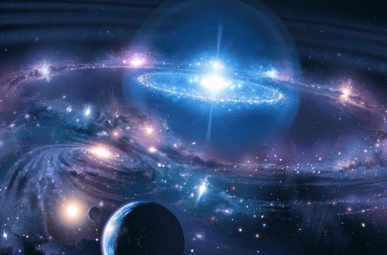

introduce
well hello there anyone who reading this site this site is made for create new whole au undertale let me explain this site like other story site... this site is unlike anything this verse is whole diffrent which give us chance to not hold backup freedom from undertale au this verse composite version but im might be bad this site
cosmology
true undertale
true undertale has type 5 structure 1th is low routes low routes uncountable infinite dimension each dimension cover sea of all concepts and understanding some dimensions connect each just like river if 1 dimension fall then countless dimensions falls there immeasurable low routes, 2th is middle routes middle route has underspheres undersphere contains every theory ,thoughts consciousness and low routes are just some story to middle route after undersphere there is uncountable infinite underspheres and there infinite middle routes, 3th connection routes is place where all thoughts of undertale AU but more further so baseline is each au has own underspheres and there uncountable infinite in AU there is infinite 3t connection routes, 4th beyond routes beyond route Contains a every stories and storylines from authors, a World View and also contains a beyond stories and storylines which contains the all kind of Narrator Domains. The Narrator Domains are basically a setting and its fanmade works absolute all stories and storylines. World Views contains, official or not, an author's viewpoint on how the AU Worlds works, beyond route contain all of this or even bigger but there infinite beyond routes,after all this is just one layer of infinite layers those layers is called layer into storylines all thing mentioned is just part of layer into storylines there is immeasurable storylines each storyline contain infinite 4th beyond routes but completly diffrent those immeasurable storyline but each storylines diffrent to each other but same level structures even thought this is just part of layer into storylines there infinite layers but above layer is transcend from lower layer mostly those layers is like surrend around authors at every way this making we could easily intract those authors 5th further beyond routes well further beyond is beyond route but above beyond routes and not limited by them beyond to concepts of beyond routes this basically beyond above author's all kind of viewpoints this, .core is exist void that between all true routes but this not we are talk about we talk about one tree that inside of core this tree know as great tree of core this most unknow thing also most strongest and oldest structure even true Chara never reached this place but said "she once see it and hear it this tree is almost alive and has mind if i compare true routes to that tree it would absolute further beyond comparing to true routes" However we don't have much information about great tree of core only we know this tree's energe can do absolute everything even presence is absolute everywhere and core has multiple other great trees those tree know as great tree of story, great tree of prime, great tree of order,great tree of multiverse, ... " even one of geat being called god of stories Chara and Chara the multiverse/god multiverses ...., there is multiple those Chara are true routes beings
multirnaterses
so basically multirnaterse is has 3 level 1 level is oron or know as alternate universe 2 level is goron or know as godly alternate universe that scale higher than level 1 level 3 is full or know as prime alternate universe that scale higher than level 2 after that multirnaterse contain all this there is multirnaterse has name multirnaterse-1 multirnaterse-2 then 3 then 4 this is never ending and 2 is fully irrelevant existence to 1 3 is full irrelevant to 2 so all those multirnaterses all irrelevant to each others but upper numbered multirnaterse scale higher lower numbered multirnaterse after that we reach alpha-multirnaterse this alpha-multirnaterse beyond transcends to those multirnaterses after that we reach omega-multirnaterse which same level as alpha-multirnaterse omega-multirnaterse is place where all players cant reach after that we reach reality layer which all thing mentioned and there the Reality Reality has infinite reality layers and some layers are higher than the other and the Reality has infinite reality layers (that transcende one another) reality layer contains all kind of mathematics, theology, philosophy anti-philosophy,truth, lies, ideas, everything and higher layers's mathematics, theology, philosophy, and anti-philosophy,truth, lies, ideas, transcend from lower layers and this just the Reality there is infinite Realities there is multiple type of realities some of Realities more beyond powerful than some Realities if we go Further then we face hyperverse hyperverse contain all thing mentioned but there is few realities then scale higher than hyperverse itself example giga Realities giga Realities are beyond for hyperverse without boubt giga Realities one of the most powerful type of Realities
OUTERVERSE
outerverse bubble that contains ultrasphere existsphere extrasphere so ultrasphere is basically boundless's bound itself this ultrasphere also bound and contains hyperverse existsphere is capable of absolute everything and beyond for infinite this existsphere also contain bigger than absolute everything imaginable, unimaginable, possible, impossible, existent, non-existent, known, unknown, thinkable, unthinkable, created, uncreated, discovered, undiscovered, definable, undefinable, scalable, un-scalable, fictional, non-fictional, logical, illogical, conceivable, unconceivable, etc and infinitum, and even the everything beyond it, and the everything beyond that, and the everything beyond that, after that we reach extrasphere extrasphere is force that absolutely outside of existspheres and 5th kings's crown is capable of absolute everything imaginable, unimaginable, possible, impossible, existent, non-existent, known, unknown, thinkable, unthinkable, created, uncreated, discovered, undiscovered, definable, undefinable, scalable, un-scalable, fictional, non-fictional, logical, illogical, conceivable, unconceivable, etc...ad infinitum, and even the everything beyond it, and the everything beyond that, and the everything beyond that almost compare to extrasphere in arc 1.5 and 5th kings also beyondpotence which compare extrasphere this beyondpotence capable of be beyond to absolute everything even the omnipotence
alternative universes
alternative universe is universe that exist above and beyond, outside of hyperverses alternative universes has infinite layered existence all those layer are equally powerful this universe has deep layer, middle layer, Further layer, beyond layer, those equally powerful but exist in deep or beyond to abyss abyss is beyond for Users reside or can be present outside of everything: space, time, non-space, non-time, duality, probability, improbability, possibility, impossibility, nonexistence, nothingness, existence, etc. Due to being outside of all forms of existence they cannot be affected by anything, even Paradox Manipulation or Reality Warping and are immune to absolutely everything, even Universal Irreversibility. abyss has 2 type 1 type is between all infinite alternative universes 2 type is in anti-void so more deep to abyss layers would become more outer and stronger structure but same level so let’s start from layers deep layer deep layers are transcending from hyperverses and whole true universe/4th wall and there is infinite deep layers more deeper layer called middle layer is same level as abyss itself which Users reside or can be present outside of everything: space, time, non-space, non-time, duality, probability, improbability, possibility, impossibility, nonexistence, nothingness, existence, etc. Due to being outside of all forms of existence they cannot be affected by anything, even Paradox Manipulation or Reality Warping and are immune to absolutely everything, even Universal Irreversibility.Further layer is some layer that deeper than middle layer this type layer's existence called supreme author existence more about supreme author beyond layer is type os layer that beyond for abyss itself maybe even more but those all and type of layer still part of alternative universe and still location is diffrent but still same and if one layer lose then all layers would fall too and there is infinite alternative universes
book of timeline
book of timline is made infinite type of timeline one type of timeline made of infinite amount timeline but those timeline is not normal timeline those timeline is actually infinite alternative universe so 1 type of timeline is infinite stacked timeline/alternative Universes and types of timeline support each others existence and there is DREAM REALM DREAM REALM has infinite DREAM LANDS DREAM LAND is almost beyond heaven let me explain what is meaning beyond heaven well DREAM LAND exist before everything everytime and alternative universes have absolute transcending from everything forever even thing that bringed by elder gods it keep transcending book of timeline is contains whole absolute everything of all type of timeline and there is working system of DREAM REALM so if type of timeline is book cover then DREAM REALM/absolute all fiction or any bigger thing than absolute fiction would be pages
library of timeline
library of timeline has infinite leveled layers each leveled layer beyond comparison to each other now more Further one level has infinite same level's layers and each layer contain immeasurable catalogue and each catalogue has infinite books and of course those book are book of timeline so other 1 layer is contain and based on diffrent type of universe that instant alternative universes such as cosmic universe, narrotive universe, ... so lets see intresting things if there is something that never or impossible to describe in fiction or zohoils it would easily can be describe in lower layers more lower layers would be beyond definition in upper layer would already described in lower layers but there is one thing we should know is if we are see fiction as nothing but enjoyable thing then we are existence that layer above fiction's layer also 1 thing we should know is every tier system that in fiction is still in fiction as i said anything above book of timeline is consider as above tier or know as zohoils so what im saying is in fiction we have beyond tier and beyond irrelevant tiers is still part of fiction even tier above this still part of fiction even there infinite type of tier system created still scale under fiction and mostly zohoils is more closer and stronger than fiction to our universe or know as real that us that reading there other multiple thing as zohoils still never reach our real this like memeforce solo fiction so back library of timeline there is infinite layers above and lower
  